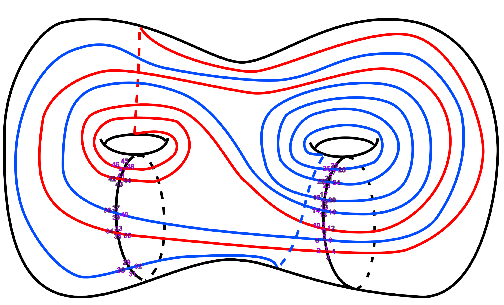
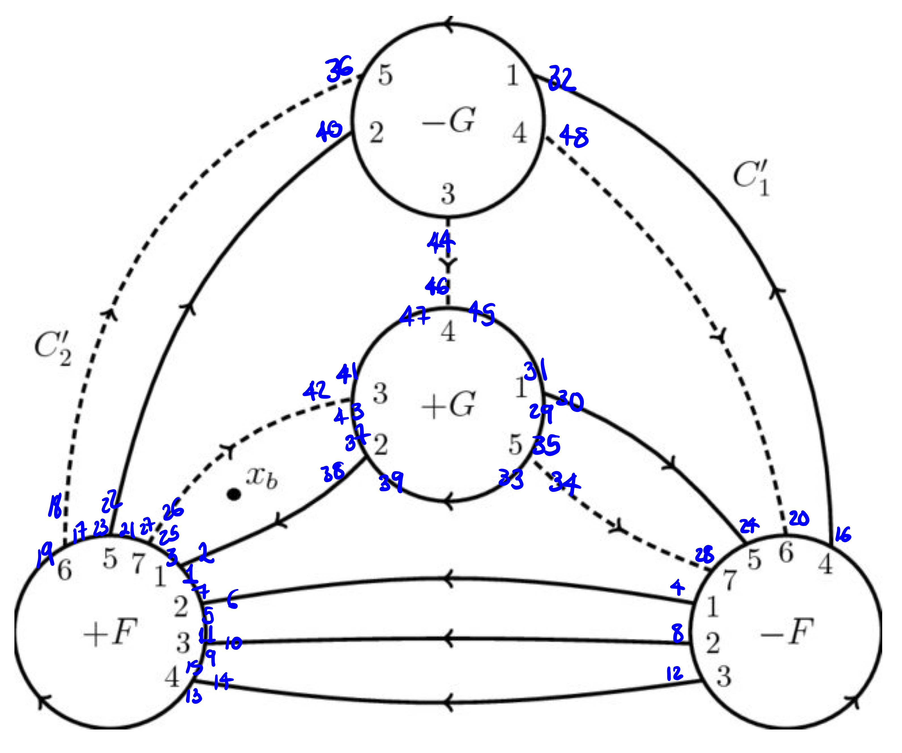

5. Ejemplos
Verificación computacional de equivalencia de sistemas de rotación
En el capítulo anterior vimos cómo sistemas de rotación aparentemente diferentes pueden representar el mismo encaje topológico. Aquí exploraremos casos más complicados donde la equivalencia no es inmediatamente obvia.
Un ejemplo ilustrativo: ¿Moño vs ojo?
A primera vista, los siguientes dos encajes parecen topológicamente diferentes:

\( \sigma_1=(1,2,3,4)(5,10)(6,9)(8,12)(7,11) \), \( \rho=(1,5)(4,8)(2,6)(3,7)(9,10)(11,12) \)

\( \sigma_2=(1,4,3,2)(5,10)(6,9)(8,12)(7,11) \), \( \rho=(1,5)(4,8)(2,6)(3,7)(9,10)(11,12) \)
Intuición geométrica inicial
En una representación plana con cara exterior distinguida, la diferencia parece evidente:
Figura izquierda (el moño): La cara exterior colinda con vértices de ambos triángulos. Es posible trazar un camino desde cualquier vértice hacia el infinito sin cruzar ninguna arista.
Figura derecha (el ojo): La cara exterior solo colinda con el triángulo mayor. Los vértices del triángulo menor quedan topológicamente “aislados” en una cara interior, y parece imposible conectarlos con el exterior sin cruzar el ciclo del triángulo mayor.
Esta intuición sugeriría que no son equivalentes. Sin embargo…
¡La verificación computacional dice lo contrario!
Aunque comparten el mismo emparejamiento \(\rho\), y el orden cíclico en el vértice principal está invertido en \(\sigma_2\) (comparado con \(\sigma_1\)), resulta que sí existe una biyección de dardos que conjuga uno en el otro.
Prueba el código directamente aquí (haz clic en “Ejecutar”):
¿Qué salió mal con la intuición?
La clave está en recordar que los encajes en superficies cerradas no tienen una “cara exterior” privilegiada. Cuando vemos una representación plana, estamos eligiendo arbitrariamente una cara para “abrir” y dibujar el resto.
Lo que parece una “obstrucción topológica” en el plano es simplemente un artefacto de nuestra elección de representación. Un homeomorfismo que preserve la orientación puede cambiar completamente cuál cara se convierte en “la exterior” al dibujar.
La intuición geométrica en representaciones planas puede ser engañosa. Los invariantes algebraicos (\(V, E, F, \chi, g\)) y la verificación computacional son herramientas más confiables para determinar equivalencia topológica.
¿Cómo funciona el isomorfismo?
La permutación \(\phi = (1,4)(2,3)(5,8)(6,7)(9,11)(10,12)\) reetiqueta los dardos de forma que:
- Invierte el ciclo principal: \((1,2,3,4) \mapsto (1,4,3,2)\)
- Respeta completamente el emparejamiento \(\rho\) de aristas
- Preserva toda la estructura combinatoria del ribbon graph
En este ejemplo, \(\phi\) tiene además una lectura geométrica concreta: corresponde a reflejar el moño respecto de un eje vertical que pasa por el vértice central, recuperando el otro dibujo.
Esto demuestra que, aunque los dibujos se vean diferentes en el plano, representan el mismo encaje topológico cuando se consideran como superficies cerradas.
Buscando ejemplos genuinamente no equivalentes
Para construir sistemas de rotación que realmente sean no equivalentes pero tengan el mismo género, necesitaríamos:
- Diferentes números de vértices, aristas, o caras
- Diferente estructura en los ciclos de \(\sigma\) o \(\rho\) que no pueda conjugarse
Un ejemplo concreto
La siguiente imagen muestra dos encajes del mismo grafo abstracto: a la izquierda el ribbon graph \((\sigma_1, \rho_1)\) y a la derecha \((\sigma_2, \rho_2)\), donde \(\sigma_2 = \sigma_1\) pero \(\rho_2\) difiere ligeramente de \(\rho_1\).

\[ \sigma_1 = \sigma_2 = (1,2)(3,4,5)(6,7,8)(9,10)(11,12,13)(14,15,16) \]
\[ \rho_1 = (1,8)(2,3)(4,12)(5,6)(7,15)(9,16)(10,11)(13,14) \]
\[ \rho_2 = (1,8)(2,3)(4,13)(5,6)(7,15)(9,14)(10,11)(12,16) \]
Ambos comparten los mismos invariantes globales (\(V\), \(E\), \(F\), \(\chi\), \(g\)) y sin embargo no son equivalentes. El diagnóstico más rápido es comparar las longitudes de los ciclos de \(\phi = \rho\sigma\) (las caras). Si los multiconjuntos de longitudes difieren, no puede existir isomorfismo:
El resultado muestra que las longitudes de caras son \(\{3,3,5,5\}\) para el primer sistema y \(\{3,3,4,6\}\) para el segundo. Como cualquier isomorfismo preserva las longitudes de ciclos de \(\phi\), la diferencia en los multiconjuntos es condición suficiente para concluir la no-equivalencia sin necesidad de correr la búsqueda con retroceso completa.
Unicidad en grafos 3-conexos
Nótese que en el ejemplo anterior tenemos un grafo 2-conexo: hay pares de vértices cuya remoción desconecta el grafo, pero ningún vértice individual lo hace. Cuando aumentamos la conectividad hasta 3, sí se pueden garantizar encajes únicos. Esto se conecta con el Teorema de Whitney:
Todo grafo planar 3‑conexo tiene un encaje único en la esfera (único salvo equivalencia topológica, es decir, reflexiones y homeomorfismos).
Este resultado tiene un antecedente importante: en 1922, Steinitz demostró que todo grafo planar 3-conexo es el grafo de aristas de algún poliedro convexo, y que dicho poliedro es único salvo proyección. El teorema de Whitney puede verse como la versión combinatoria de ese resultado: la 3-conexidad fija la estructura combinatoria del encaje, del mismo modo en que Steinitz fijó la estructura poliedral.
Aquí “3‑conexo” no es “valencia 3”; se refiere a cuántos vértices hay que quitar para desconectar el grafo:
- 1‑conexo: al quitar 1 vértice el grafo se desconecta (p. ej. una estrella).
- 2‑conexo: se requieren al menos 2 vértices para desconectarlo (p. ej. un ciclo).
- 3‑conexo: se requieren al menos 3 vértices para desconectarlo.
Ejemplos visuales de grafos 3‑conexos:
- El esqueleto de un cubo.
- El esqueleto de un tetraedro (\(K_4\)).
- El esqueleto de un dodecaedro.
En estos casos, el Teorema de Whitney garantiza que el encaje planar es esencialmente único.
Verificar equivalencia: del problema al algoritmo
La escala del problema
Para verificar si dos sistemas de rotación sobre \(n\) dardos son equivalentes, necesitamos encontrar una biyección \(\phi:\{1,\ldots,n\}\to\{1,\ldots,n\}\) que satisfaga
\[ \phi \cdot \sigma_1 \cdot \phi^{-1} = \sigma_2 \qquad\text{y}\qquad \phi \cdot \rho_1 \cdot \phi^{-1} = \rho_2. \]
El conjunto de todas las biyecciones posibles es el grupo simétrico \(S_n\), de tamaño \(n!\). Para el ejemplo de los dos encajes no equivalentes que vimos arriba, con \(n = 16\) dardos:
\[ 16! \;\approx\; 2.09 \times 10^{13}. \]
Verificando un millón de permutaciones por segundo, recorrer todas llevaría unos 242 días. Y eso suponiendo que los multiconjuntos de caras hubieran coincidido y no pudiéramos descartar la equivalencia de inmediato. Para los diagramas de Heegaard que veremos a continuación, con \(n=48\):
\[ 48! \;\approx\; 1.24 \times 10^{61}, \]
completamente fuera del alcance de cualquier computadora concebible.
El grafo abstracto restringe la búsqueda
La observación clave es que cualquier isomorfismo debe preservar la estructura del grafo abstracto. Como \(\sigma\) codifica el orden cíclico de los dardos alrededor de cada vértice, una biyección \(\phi\) solo puede ser isomorfismo si mapea ciclos de \(\sigma_1\) a ciclos de \(\sigma_2\) de la misma longitud. En otras palabras, \(\phi\) actúa como una permutación entre los ciclos de \(\sigma\), junto con una rotación dentro de cada ciclo.
Esto restringe drásticamente el espacio de búsqueda. Para el ejemplo con \(n=16\) y tipo de ciclo \(2^2 \cdot 3^4\) (dos 2-ciclos y cuatro 3-ciclos):
| Elección | Opciones |
|---|---|
| ¿Cuál 2-ciclo se manda a cuál? | \(2! = 2\) |
| Rotación dentro de cada 2-ciclo | \(2^2 = 4\) |
| ¿Cuál 3-ciclo se manda a cuál? | \(4! = 24\) |
| Rotación dentro de cada 3-ciclo | \(3^4 = 81\) |
| Total de candidatos | \(2 \times 4 \times 24 \times 81 = 15{,}552\) |
Son más de \(10^9\) veces menos candidatos que por fuerza bruta. Cada uno debe aún verificarse contra la condición de \(\rho\), pero la reducción es enorme.
Búsqueda con retroceso y propagación
Podemos reducir aún más el espacio explotando que las condiciones de isomorfismo propagan restricciones en cadena. Al fijar la imagen de un solo dardo, \(\phi(d_1) = d_2\), las condiciones de isomorfismo imponen de inmediato nuevas asignaciones:
Propagación por \(\sigma\): La condición \(\sigma_1(\phi(d)) = \phi(\sigma_2(d))\) determina las imágenes de todos los dardos en el ciclo de \(\sigma_2\) que contiene a \(d_1\):
\[ \phi(\sigma_2(d_1)) = \sigma_1(d_2), \quad \phi(\sigma_2^2(d_1)) = \sigma_1^2(d_2), \quad \ldots \]
Propagación por \(\rho\): La condición \(\phi(\rho_1(d)) = \rho_2(\phi(d))\) determina el dardo emparejado:
\[ \phi(\rho_1(d_1)) = \rho_2(d_2). \]
Cada nueva asignación puede desencadenar más propagaciones. Si en algún momento una propagación contradice una asignación anterior, esa rama se descarta de inmediato sin seguir explorando. Si se termina de asignar todos los dardos sin contradicción, se ha encontrado un isomorfismo. Si se agotan todas las opciones, queda probado que no existe ninguno.
El procedimiento es una búsqueda con retroceso: se construye \(\phi\) eligiendo libremente la imagen del siguiente dardo sin asignar, se propagan las consecuencias, y si hay contradicción se retrocede al último punto de elección libre para probar la siguiente opción.
Diagramas de Heegaard como encajes celulares
Los diagramas de Heegaard de variedades de 3 dimensiones con mínimo número de vértices pueden representarse como encajes celulares, y la pregunta de si dos diagramas describen la misma variedad puede reducirse a verificar la equivalencia de sus sistemas de rotación.
Esfera de Poincaré - Diagrama de Heegaard como encaje celular:

\[ \begin{aligned} \sigma &= (1,2,3,4)(5,6,7,8)(9,10,11,12)(13,14,15,16) \\ &\phantom{=} (17,18,19,20)(21,22,23,24)(25,26,27,28)(29,30,31,32) \\ &\phantom{=} (33,34,35,36)(37,38,39,40)(41,42,43,44)(45,46,47,48) \end{aligned} \]
\[ \begin{aligned} \rho &= (1,7)(2,36)(3,25)(4,48)(5,11)(6,40)(8,30)(9,15) \\ &\phantom{=} (10,42)(12,34)(13,19)(14,38)(16,18)(17,23) \\ &\phantom{=} (20,22)(21,27)(24,26)(28,32)(29,35)(31,45) \\ &\phantom{=} (33,39)(37,43)(41,47)(44,46) \end{aligned} \]
Este sistema de rotación representa el diagrama de Heegaard de la esfera de Poincaré pensado como un encaje celular.
Prueba el código directamente aquí (haz clic en “Ejecutar”):
Diagrama Alterno de Heegaard como encaje celular:

\[ \begin{aligned} \sigma &= (1,2,3,4)(5,6,7,8)(9,10,11,12)(13,14,15,16) \\ &\phantom{=} (17,18,19,20)(21,22,23,24)(25,26,27,28)(29,30,31,32) \\ &\phantom{=} (33,34,35,36)(37,38,39,40)(41,42,43,44)(45,46,47,48) \end{aligned} \]
\[ \begin{aligned} \rho &= (1,7)(2,38)(3,25)(4,6)(5,11)(8,10)(9,15)(12,14) \\ &\phantom{=} (13,19)(16,32)(17,23)(18,36)(20,48)(21,27)(22,40) \\ &\phantom{=} (24,30)(26,42)(28,34)(29,35)(31,45) \\ &\phantom{=} (33,39)(37,43)(41,47)(44,46) \end{aligned} \]
Este sistema de rotación representa el diagrama de Heegaard de la esfera de Poincaré pensado como un encaje celular.
¿Son equivalentes los dos diagramas de Heegaard?
Tanto el diagrama original como el alterno tienen la misma \(\sigma\). La pregunta es si existe un isomorfismo de ribbon graphs entre ellos. El siguiente código verifica primero que ambos \(\rho\) sean válidos, calcula sus invariantes y luego aplica la búsqueda con retroceso para encontrar un isomorfismo \(\phi\).
Prueba el código directamente aquí (haz clic en “Ejecutar”):
La solución encontrada
El algoritmo (que es determinista: siempre recorre el mismo árbol de búsqueda) encuentra el isomorfismo entre los dos diagramas de Heegaard en menos de 0.1 segundos.
\[ \begin{aligned} \phi &= (1,27)(2,28)(3,25)(4,26)(5,23)(6,24)(7,21)(8,22) \\ &\phantom{=}(9,19)(10,20)(11,17)(12,18)(13,15)(14,16) \\ &\phantom{=}(29,39)(30,40)(31,37)(32,38)(33,35)(34,36) \\ &\phantom{=}(41,47)(42,48)(43,45)(44,46) \end{aligned} \]
Esta permutación conjuga simultáneamente \(\sigma\) en \(\sigma\) y \(\rho_1\) en \(\rho_2\), probando que los dos diagramas de Heegaard describen el mismo encaje celular.
Verificación del isomorfismo (haz clic en “Ejecutar”):
Ejercicios
Verifica a mano que \(\phi = (1,4)(2,3)(5,8)(6,7)(9,11)(10,12)\) es un isomorfismo entre los dos sistemas del ejemplo del moño y el ojo. Para ello comprueba las dos condiciones de equivalencia:
- \(\phi \cdot \sigma_1 \cdot \phi^{-1} = \sigma_2\) — aplica la conjugación dardo a dardo.
- \(\phi \cdot \rho \cdot \phi^{-1} = \rho\) — verifica que el emparejamiento de aristas se preserva.
Puedes ayudarte del código SageMath de la sección anterior, pero el objetivo es entender por qué cada transposición en \(\phi\) envía correctamente cada ciclo al ciclo correspondiente.
La esfera de Poincaré admite varios diagramas de Heegaard. Busca en la literatura (o construye tú mismo) una descripción distinta a las dos presentadas aquí, que use también 12 vértices de valencia 4 (es decir, \(n = 48\) dardos con \(\sigma\) formada por ciclos de longitud 4).
Una vez tengas el sistema de rotación \((\sigma', \rho')\):
- Verifica que es válido: \(\sigma'\) formada por 12 cuatro-ciclos, \(\rho'\) una involución fija sin puntos sobre \(\{1,\ldots,48\}\).
- Calcula sus invariantes (\(V, E, F, \chi, g\)) y comprueba que coinciden con los de los diagramas ya presentados.
- Aplica la búsqueda con retroceso para determinar si es equivalente a alguno de los dos diagramas anteriores.
Resumen
- Invariantes como filtro rápido: Las longitudes de los ciclos de \(\phi = \rho\sigma\) (las caras) son invariantes bajo isomorfismo. Si los multiconjuntos de longitudes difieren, la no-equivalencia queda probada sin necesidad de buscar \(\phi\).
- La estructura de \(\sigma\) restringe la búsqueda: Todo isomorfismo debe mapear ciclos de \(\sigma_1\) a ciclos de \(\sigma_2\) de la misma longitud, lo que reduce el espacio de búsqueda de \(n!\) a un número mucho menor de candidatos.
- Búsqueda con retroceso y propagación: Fijar \(\phi(d_1) = d_2\) determina automáticamente los demás dardos del mismo ciclo de \(\sigma\) y el dardo emparejado en \(\rho\). Las contradicciones se detectan y podan de inmediato, haciendo viable la búsqueda incluso para \(n = 48\).
- Unicidad en grafos 3-conexos: Por el Teorema de Whitney (1932), todo grafo planar 3-conexo tiene un único encaje en la esfera. Steinitz (1922) había probado el resultado equivalente para poliedros convexos.
- Diagramas de Heegaard como aplicación: Los dos diagramas de la Esfera de Poincaré con 12 vértices de valencia 4 resultan ser equivalentes: el algoritmo encuentra en menos de 0.1 segundos el isomorfismo \(\phi\) que los conjuga.
Publicado el 13 de febrero de 2026